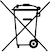

Om surfplattan Säkerhet och föreskrifter
Om surfplattan Säkerhet och föreskrifterHär hittar du produktinformation
Korrekt hantering och användning
Den här guiden innehåller de grundläggande säkerhetsriktlinjer som finns i det tryckta häftet Säkerhet och garanti som medföljer Google Pixel Tablet och laddningsstationen med högtalare. Den innehåller dessutom ytterligare information om säkerhet, föreskrifter och garantier för surfplattan och dockningsstationen.
Information om säkerhet och föreskrifter: g.co/pixeltablet/reg eller Inställningar Om surfplattan Säkerhet och föreskrifter
Information om vilken garanti som gäller i landet där du köpte produkten, t.ex. hur du gör en reklamation: g.co/devicewarranty.
Elektroniska föreskriftsetiketter och värden för specifik absorptionsnivå (SAR) för din enhet: Inställningar Om telefonen Föreskriftsetiketter.
Information om ekodesign (energiprestanda): g.co/ecodesign
Produkthjälp: g.co/pixeltablet/care
 |
VARNING! HÄLSO- OCH SÄKERHETSINFORMATION – LÄS DETTA INNAN DU ANVÄNDER ENHETEN FÖR ATT MINSKA RISKEN FÖR PERSONSKADOR, OBEHAG, SKADAD EGENDOM INKLUSIVE SKADOR PÅ GOOGLE PIXEL TABLET OCH DESS TILLBEHÖR ELLER ANSLUTNA ENHETER SAMT ATT UTSÄTTAS FÖR ANDRA RISKER |
Hantera surfplattan, dockningsstationen och tillbehören varsamt. Enheten eller eventuella medföljande batterier eller tillbehör kan skadas om du tar isär, tappar, böjer, bränner, krossar eller sticker hål på enheten. Ta försiktigt bort surfplattan när den är dockad. Använd inte surfplattan, dockningsstationen och tillbehören om de är skadade, till exempel om höljet är trasigt eller skärmen sprucken. Om du använder en skadad surfplatta, dockningsstation och tillbehör finns risk för överhettning eller personskador. Utsätt inte enheterna för vätskor eftersom det kan orsaka kortslutning och överhettning. Använd inte en extern värmekälla för att torka enheterna om de blir blöta.
Surfplattan, dockningsstationen och tillbehören är avsedda för användning i en torr inomhusmiljö. Enheterna fungerar bäst i temperaturer mellan 0 °C och 35 °C och ska förvaras i temperaturer mellan -20 °C och 45 °C. Utsätt inte enheterna för högre temperaturer än 45 °C, till exempel genom att placera dem på instrumentbrädan i en bil eller vid en värmefläkt, eftersom det kan skada enheterna, överhetta batteriet eller medföra brandrisk. Placera inte enheterna vid en värmekälla eller i direkt solljus. Om enheten blir för varm kopplar du ur den (om den är ansluten till en laddare) och flyttar den till en svalare plats. Använd den inte förrän den har svalnat. Produkterna är utformade för att fungera bäst på höjder upp till 5 000 m.
Surfplattan kan generera mer värme än normalt vid vissa typer av användning, till exempel när du spelar spel, spelar in video, använder ficklampan eller använder funktioner för virtuell eller förstärkt verklighet. Det kan medföra att surfplattans energisparläge aktiveras eller att den stängs av tillfälligt. Var försiktig när du använder enheten i dessa lägen. Mer information om risker i samband med långvarig exponering för hetta finns i avsnittet Långvarig exponering för hetta nedan.
Försök inte reparera surfplattan, dockningsstationen eller tillbehören själv. Det finns risk för skador, på både dig och enheten, när enheten monteras isär. Kontakta kundtjänst om produkten inte fungerar som den ska eller har skadats. Mer information finns på g.co/pixeltablet/care.
Laddningsstationen, nätadaptern och surfplattan ska vara placerade på väl ventilerade platser när de används eller laddas. Om skadade kablar eller nätadaptrar används eller om du laddar enheterna i fuktiga miljöer kan det uppstå risk för brand, elektriska stötar, personskada eller skada på enheterna eller annan egendom. Kontrollera att laddningsstiften inte har fukt eller skräp innan de dockas. Ladda inte surfplattan när den är blöt. Undvik att ladda enheten i direkt solljus.
När du laddar enheten måste nätadaptern vara lättåtkomlig och ansluten till ett eluttag i närheten av enheten. Försök inte trycka i nätadaptern med våld intill en annan kontakt om det inte finns tillräckligt med utrymme för båda. Håll i själva nätadaptern när du drar ur kontakten. Dra aldrig i laddningskabeln. Vrid eller kläm inte kabeln och tvinga inte in kontakten i en port. Om ett meddelande visas om att du ska dra ur nätadaptern eller koppla ur dockningsstationen när du laddar följer du de anvisningarna. Innan du försöker ladda enheten igen ska du kontrollera att både laddningskabelns kontakt och telefonens laddningsport är torra och utan främmande föremål.
Placera inte metallföremål eller magnetiska föremål på dockningsstationens eller surfplattans exponerade stift när de är dockade, eftersom det kan leda till att föremålet eller enheten värms upp.
Dockningsstationen för laddare levereras med en laddare med rätt certifiering.
Ladda surfplattan med en USB-C PD-kompatibel laddare eller kompatibla laddningstillbehör från Google Store eller Googles auktoriserade återförsäljare (titta efter Googles märke Made For). Laddaren måste vara certifierad för en begränsad strömkälla enligt IEC 60950-1 och/eller en strömkälla av klass 1 (PS2) enligt IEC 62368-1 märkt: 5 V DC, max 3 A, 9 V DC, max 2 A eller båda. Om du inte använder kompatibla laddningstillbehör kan brand, elektriska stötar, personskada eller skada på enhet och tillbehör uppstå.
Surfplattan, dockningsstationen och nätadaptern utstrålar värme vid normal användning och uppfyller gällande standarder och begränsningar vad gäller höljets temperatur. Undvik långvarig hudkontakt eftersom långvarig kontakt med varma ytor kan leda till obehag eller brännskador. Sov inte på eller med enheten eller dess nätadapter och täck dem inte med kuddar eller filtar. Var medveten om detta om du har ett medicinskt tillstånd som påverkar din förmåga att känna värme mot huden.
Den här enheten är inte en leksak. Enheterna (eller eventuella medföljande tillbehör) kan innehålla smådelar, kablar, plast-, glas- eller metalldelar och delar med vassa kanter som kan orsaka skador eller utgöra en kvävningsrisk. Kablar och sladdar utgör en strypningsrisk för barn. Förvara enheten och dess tillbehör, inklusive sladdar och kablar, utom räckhåll för barn (minst 0,9 m avstånd) och låt dem inte leka med surfplattan eller dess tillbehör. De kan skada sig själva eller andra och de kan oavsiktligt skada enheterna. Om ett barn sväljer smådelar eller skadas måste ni omedelbart uppsöka läkarvård.
 |
Långvarig exponering för höga ljud (till exempel musik) kan orsaka nedsatt hörsel. Minska risken för hörselskador genom att undvika att lyssna på musik på hög volym under längre tid. Kontinuerlig exponering för hög volym och bakgrundsljud kan få höga ljud att verka lägre än de i själva verket är. Kontrollera volymen innan du använder hörlurar eller öronsnäckor. |
Den här surfplattan innehåller ett uppladdningsbart litiumjonbatteri, vilket är en känslig komponent som kan orsaka personskador om det skadas. Försök inte att ta ut batteriet. Kontakta Google eller en serviceleverantör som har godkänts av Google om du vill byta ut batteriet. Du hittar kontaktuppgifter på g.co/pixeltablet/contact. Om batteriet byts av någon som inte är kvalificerad kan enheten skadas. Om batteriet byts ut på fel sätt eller om du använder ett batteri som inte uppfyller kraven kan det innebära en risk för brand, explosion, läckage eller andra faror. Du ska inte modifiera eller återskapa/restaurera batteriet, punktera eller försöka föra in objekt i batteriet, sänka ned eller utsätta batteriet för vatten eller andra vätskor, eller utsätta batteriet för brand, mycket höga temperaturer och/eller andra faror.
Kassera och transportera enheten, batterier och tillbehör i enlighet med lokala miljö- och transportföreskrifter. Transportera dem inte på ett felaktigt sätt och kasta dem inte i vanliga hushållssopor. Felaktig kassering eller transport kan leda till brand, explosion och/eller andra risker. Du ska inte öppna dem, krossa dem, hetta upp dem till över 45 °C eller förbränna dem. Du hittar mer information om återvinning av enheten, batterierna och tillbehören på g.co/HWRecyclingProgram.
För att förhindra att sufplattans eller dockningsstationens delar eller inre kretsar skadas ska de och deras tillbehör inte förvaras i närheten av magnetiska fält eller på platser där det är dammigt, fuktigt eller smutsigt. Placera inte enheten i närheten av värmekällor eller i direkt solljus. Lämna inte enheterna i ett fordon eller på platser där temperaturen kan överstiga 45 °C, till exempel på instrumentbrädan i en bil, fönsterbrädan, nära en värmekälla eller bakom glas som utsätts för direkt solljus eller starkt ultraviolett ljus under långa tidsperioder. Det kan skada enheterna, överhetta batteriet eller utgöra en risk för brand eller explosion.
Enheten har bedömts uppfylla tillämpliga regelmässiga krav när det gäller exponering för radiovågor och är utformad och tillverkad för att inte överskrida tillämpliga utsläppsgränser för exponering för radiofrekvensenergi.
I länder där gränsen för specifik absorptionsnivå (Specific Absorption Rate, SAR) är på 1,6 W/kg i genomsnitt över 1 gram vävnad är de högsta SAR-värdena för denna enhetstyp 1,14 W/kg när den används mot överkroppen utan avstånd. I länder där gränsen för specifik absorptionsnivå (Specific Absorption Rate, SAR) är på 2,0 W/kg i genomsnitt över 10 gram vävnad och 4,0 W/kg i genomsnitt över 1 gram vävnad för användning mot armar och ben, är de högsta SAR-värdena för denna enhetstyp 0,56 W/kg när den används mot överkroppen utan avstånd och 1,93 W/kg för användning mot armar och ben utan avstånd.
Du hittar gällande SAR-värden för vart och ett av dessa rättskipningsområden på surfplattan: Inställningar Om surfplattan Föreskriftsetiketter.
Du kan minska exponeringen för radiofrekvensenergi genom att använda ett handsfree-alternativ, till exempel den inbyggda högtalartelefonen, de medföljande hörlurarna eller liknande tillbehör. Enhetens tillbehör, till exempel fodral och hållare, får inte vara gjorda av metall. Håll enheten borta från kroppen för att följa avståndskravet.
Följande sidor innehåller mer information om specifik absorptionsnivå:
fcc.gov
icnirp.org
ec.europa.eu
dot.gov.in
Enheten har bedömts uppfylla tillämpliga regelmässiga krav när det gäller exponering för radiovågor och är utformad och tillverkad för att inte överskrida tillämpliga utsläppsgränser för exponering för radiofrekvensenergi.
Följ alla regler som förbjuder användning av trådlös teknik (som mobilnät eller wifi). Enheten är konstruerad för att följa regler om radiofrekvent störning, men användning av trådlösa enheter kan påverka annan elektronisk utrustning negativt. På flygplan och inför ombordstigning får trådlösa enheter bara användas i enlighet med flygbolagets anvisningar. Användning av en trådlös enhet i ett flygplan kan störa trådlösa nätverk och utgöra en fara för flygplanets manövrering. Det kan också vara olagligt. Det kan vara tillåtet att använda enheten i flygplansläge.
När användning av ultrabredband är förbjudet i området, till exempel i ett flygplan, kan ultrabredband inaktiveras genom att aktivera flygplansläget. Om du vill aktivera flygplansläget öppnar du snabbinställningarna och trycker på Flygplansläge. Om du vill inaktivera flygplansläget öppnar du Inställningar Nätverk och internet Flygplansläge.
Enheten använder radioenheter och andra komponenter som utstrålar elektromagnetiska fält och innehåller även magneter. Dessa elektromagnetiska fält och magneter kan störa medicintekniska produkter, t.ex. pacemakers och andra medicintekniska implantat. Håll alltid surfplattan, tillbehören och deras laddare på säkert avstånd från alla medicinska enheter. Om du har frågor om hur Google-enheten får användas med eller i närheten av medicinska enheter ska du rådfråga vårdgivare innan du använder surfplattan och tillbehören. Om du misstänker att surfplattan och dess tillbehör stör en medicinsk enhet stänger du av Google-enheten och ber din läkare om information som gäller din specifika medicinska enhet.
Stäng av din trådlösa enhet när du ombeds att göra det på sjukhus, mottagningar eller vårdcentraler. Du ombeds stänga av mobila enheter eftersom det finns risk att de stör känslig medicinteknisk utrustning.
En del personer kan reagera på material som finns i saker som är i långvarig kontakt med huden, t.ex. nickel. Om du upplever att huden blir irriterad på ställen som ofta kommer i kontakt med enheten ska du sluta använda den och kontakta läkare.
En liten andel användare kan få huvudvärk, epileptiska anfall eller förlora medvetandet vid visuell stimulans som blinkande ljus, ljusstarka mönster eller skärmanvändning. Sådan skärmanvändning kan även leda till ansträngda eller torra ögon eller trötthet. Detta kan hända personer som aldrig har haft sådana symptom tidigare. Om du tidigare har fått epileptiska anfall, förlorat medvetandet eller om du har ett medicinskt tillstånd eller besvär som du tror kan påverkas av surfplattan ska du rådfråga en läkare innan du använder enheten. Sluta använda surfplattan omedelbart och kontakta läkare om du upplever några symptom som du tror kan orsakas eller påverkas av surfplattan (till exempel huvudvärk, förlorat medvetande eller anfall).
Monotona rörelser som att skriva, trycka eller svepa på surfplattans skärm kan leda till obehag i fingrar, händer, handleder, armar, axlar eller andra delar av kroppen. Om du upplever obehag på grund av sådana rörelser ska du sluta använda surfplattan och rådfråga en läkare.
Följ dessa riktlinjer när du använder, förvarar eller rengör surfplattan, dockningsstationen och tillbehören:
Använd inte och ladda inte surfplattan, dockningsstationen eller tillbehören vid temperaturer under 0 °C eller över 35 °C. Om enheten blir varmare invändigt än den normala drifttemperaturen görs försök att reglera temperaturen, vilket kan leda till minskad prestanda, sämre anslutning, att enheten inte går att ladda eller att skärmen eller enheten stängs av. Enheten kanske inte går att använda medan temperaturen regleras. Flytta enheten någonstans där den står svalare (eller varmare) och vänta i några minuter innan du försöker använda den igen.
Dra ur kontakten innan du rengör surfplattan, dockningsstationen och nätadaptern, vid åska och om den inte ska användas under en längre period. Rengör inte surfplattan medan den laddas eftersom det kan leda till skador på dig eller enheten. Undvik lösningsmedel och slipmedel som kan skada produktens yta. Använd inte kemiska rengöringsmedel, pulver eller andra kemiska medel (som bensen) när du rengör surfplattan eller dess tillbehör.
Smink, kemikalier och färgade material som denim kan orsaka missfärgningar på ljusa enheter och fodral.
Vi rekommenderar att du rengör surfplattan och dockningsstationen genom att försiktigt torka av den med en mjuk luddfri trasa. Använd en torr trasa för att torka av damm och andra fläckar. Använd en fuktig trasa för att torka av färgfläckar, till exempel från smink eller nya jeans. Använd skärmrengöringsservetter eller putsmedel för glasögon om skärmen är smutsig. Använd vanlig handtvål eller städservetter utan blekmedel på baksidan och sidorna.
Om du vill rengöra silikonfodralet tar du bort surfplattan från fodralet. Använd en mjuk, lätt fuktad, luddfri trasa för att torka av utsidan och insidan av fodralet. Använd inte fönstertvätt, hushållsrengöringsmedel, aerosolspray, lösningsmedel, ammoniak, slipmedel eller rengöringsmedel som innehåller väteperoxid för att rengöra fodralet.
Du kan desinficera surfplattan och skärmen med hjälp av vanliga desinfektionsservetter eller städservetter med 70 % isopropylalkohol. Använd inte servetter med blekmedel. Du hittar ytterligare anvisningar om underhåll och rengöring på g.co/pixeltablet/care.
Surfplattan, dockningsstationen, laddaren och andra tillbehör som medföljer enheten är inte damm- eller vattentåliga. Fuktskador gör att garantin inte gäller. Utsätt inte surfplattan, dockningsstationen, laddaren eller andra tillbehör för vätskor eller damm, eftersom det kan orsaka kortslutning och/eller överhettning.
Otillåtna reparationer eller modifieringar kan leda till permanent skada på enheten och kan påverka garantins omfattning och behörigheten att använda enheten enligt gällande bestämmelser. Reparationer av surfplattan och dockningsstationen bör endast utföras av Google eller ett serviceställe som auktoriserats av Google. Kontakta kundtjänst för att få behörig service. Om du skickar in surfplattan och/eller dockningsstationen på service kan du eventuellt få en ersättningsenhet i stället för din ursprungliga enhet. Varor som lämnas in för reparation kan ersättas av restaurerade varor av samma typ i stället för att repareras. Restaurerade delar kan användas vid reparation av varorna. Om det går att lagra användargenererad data på produkterna kan sådan data gå förlorad vid reparation eller byte. Om du behöver hjälp och support online besöker du g.co/pixeltablet/help.
På Pixel-surfplattan hittar du information om föreskrifter, certifiering och efterlevnadsmärkning som är specifik för surfplattan under Inställningar Om surfplattan Föreskriftsetiketter. Denna information finns även på surfplattans och dockningsstationens yta.
Obs! Enheten och nätadaptern uppfyller kraven för elektromagnetisk kompatibilitet (EMC) enligt tester utförda under förhållanden där kompatibel kringutrustning och isolerade kablar används mellan systemkomponenter. Det är viktigt att du använder kompatibel kringutrustning och isolerade kablar mellan systemkomponenter för att minska risken för störningar i radio- och tv:ar och annan elektronisk utrustning.
Obs! Utrustningen har testats och visat sig följa gränserna för en digital enhet av klass B, i enlighet med avsnitt 15 i FCC-reglerna. Dessa gränser är avsedda att ge ett skäligt skydd mot skadliga störningar i bostadsinstallationer. Utrustningen genererar, använder och kan sända ut radiofrekvensenergi och kan, om den inte installeras och används i enlighet med anvisningarna, orsaka skadliga störningar i radiokommunikation. Det finns dock inte garantier för att störningar inte kan förekomma i en viss installation. Om utrustningen orsakat skadliga störningar i radio- eller tv-mottagningen (vilket du kan kontrollera genom att stänga av och slå på utrustningen) testar du att åtgärda störningen genom att göra något av följande:
Alla ändringar eller modifieringar som inte uttryckligen har godkänts av Google kan upphäva din rätt att använda utrustningen.
Enheten uppfyller kraven enligt avsnitt 15 i FCC-reglerna. Användning sker på följande två villkor:
UWB-enheter får inte användas för att driva leksaker. Användning är förbjuden i flygplan, på fartyg eller satelliter.
Pixel Tablet: GTU8P
Laddningsstation med högtalare till Pixel Tablet: GMD6J
Produktnamn
Pixel Tablet och laddningsstation med högtalare
Ansvarig part i USA:
Google LLC
1600 Amphitheatre Parkway
Mountain View, CA 94043, USA
Kontakt: g.co/pixeltablet/contact
Enheten uppfyller gränsvärdena enligt ICES-003, klass B.
Cet appareil est conforme aux limites de la norme ICES-003 pour appareils de classe B.
Enheten uppfyller ISED:s licensundantag för RSS-standarder. Användning är föremål för följande två villkor:
Le présent appareil est conforme aux CNR d'ISDE Canada applicables aux appareils radio exempts de licence. L'exploitation est autorisée aux deux conditions suivantes:
Enheten är endast avsedd att användas i band 5 150–5 250 MHz inomhus för att minska risken för skadliga störningar på mobila satellitsystem i gemensamma kanaler.
Les dispositifs fonctionnant dans la bande de 5 150 à 5 250 MHz sont réservés uniquement pour une utilisation à l’intérieur afin de réduire les risques de brouillage préjudiciable aux systèmes de satellites mobiles utilisant les mêmes canaux.
 |
Google LLC försäkrar härmed att radioutrustningen av typ GTU8P och GMD6J följer Radio Equipment Regulations 2017 (Förordningar om radioutrustning 2017). Hela försäkran om överensstämmelse finns på g.co/pixeltablet/conformity. |
Enheten får endast användas inomhus när den används inom frekvensintervallet 5 150–5 350 MHz i Förenade kungariket.
UWB bör användas inomhus. Om den används utomhus ska den inte vara ansluten till en fast installation, en fast infrastruktur eller en fast antenn för utomhusbruk.
Uppgifterna här är den högsta radiofrekventa effekten som överförs i de frekvensband som radioutrustningen använder.
| Frekvens | Ström |
| Wifi 2 400–2 483,5 MHz | < 20 dBm |
| Wifi 5 150–5 350 MHz | < 23 dBm |
| Wifi 5 470–5 725 MHz | < 23 dBm |
| Wifi 5 725–5 850 MHz | < 23 dBm |
| Bluetooth: 2 400–2483,5 MHz | < 20 dBm |
| UWB (6 489,6 MHz, 7 987,2 MHz) | < -6 dBm/50 MHz |
Pixel Tablet följer specifikationerna för radiofrekvens när den används mot överkroppen utan avstånd, begränsat till 2 W/kg i genomsnitt över 10 gram vävnad.
För Pixel Tablet är det högsta värdet för specifik absorptionsnivå (SAR) som rapporterats för enhetstypen 0,56 W/kg mot överkroppen.
Google är inte ansvariga för eventuella radio- eller tv-störningar som orsakats av obehöriga ändringar av enheterna eller tillbehören, av byte eller montering av anslutningskablar och annan utrustning annat än den som Google har angett. Åtgärder av störningar som orsakats av sådana obehöriga ändringar, byten eller kopplingar är användarens ansvar. Google och dess auktoriserade återförsäljare eller distributörer är inte ansvariga för skador eller eventuella överträdelser av myndighetsbestämmelser om användaren inte följer dessa riktlinjer.
Denna produkt uppfyller kraven i lagstadgat instrument 2012 nr 3032 Föreskrifter om begränsning av användning av vissa farliga ämnen i elektrisk och elektronisk utrustning.
REACH-förordningen (Registration, Evaluation, Authorization and Restriction of Chemicals, Statutory Instrument 2020 nr 1577) för Förenade kungariket är det Förenade kungarikets regelverk gällande kemiska ämnen. Google uppfyller alla krav i förordningen och vi arbetar för att ge våra kunder information om det finns ämnen som inger mycket stora betänkligheter (SVHC-ämnen) enligt REACH. Kontakta Google på Env-Compliance@google.com om du vill ha mer information.
|  | WEEE-symbolen till vänster betyder att produkten och batterierna enligt gällande lokala lagar och regelverk inte får slängas tillsammans med hushållsavfallet. När produkten inte längre kan användas ska du ta med den till den lokala återvinningscentralen. |
Genom separat sortering och återvinning av produkten, de elektroniska tillbehören och batterierna blir det lättare att hushålla med naturens resurser, skydda människors hälsa och hjälpa miljön.
Tillverkare: Google LLC, 1600 Amphitheatre Parkway, Mountain View, CA, USA 94043
 |
Google LLC försäkrar härmed att radioutrustningen av typ GTU8P och GMD6J följer direktiv 2014/53/EU (EU:s radioutrustningsdirektiv). Hela försäkran om överensstämmelse finns på g.co/pixeltablet/conformity. |
Enheten är begränsad till användning inomhus i frekvensområdet 5 150–5 350 MHz i AT, BE, BG, CY, CZ, DE, DK, EE, EL, ES, FI, FR, HR, HU, IE, IT, LT, LU, LV, MT, NL, PL, PT, RO, SE, SI, SK, UK(NI), CH, IS, LI, NO, TR.
UWB-enheten bör användas inomhus. Om den används utomhus ska den inte vara ansluten till en fast installation, en fast infrastruktur eller en fast antenn för utomhusbruk i AT, BE, BG, CY, CZ, DE, DK, EE, EL, ES, FI, FR, HR, HU, IE, IT, LT, LU, LV, MT, NL, PL, PT, RO, SE, SI, SK, UK(NI), CH, IS, LI, NO, TR.
Uppgifterna här är den högsta radiofrekventa effekten som överförs i de frekvensband som radioutrustningen använder.
| Frekvens | Ström |
| Wifi 2 400–2 483,5 MHz | < 20 dBm |
| Wifi 5 150–5 350 MHz | < 23 dBm |
| Wifi 5 470–5 725 MHz | < 23 dBm |
| Wifi 5 725–5 850 MHz | < 23 dBm |
| Bluetooth: 2 400–2483,5 MHz | < 20 dBm |
| UWB (6 489,6 MHz, 7 987,2 MHz) | < -6 dBm/50 MHz |
Google är inte ansvariga för eventuella radio- eller tv-störningar som orsakats av obehöriga ändringar av enheterna eller tillbehören, av byte eller montering av anslutningskablar och annan utrustning annat än den som Google har angett. Åtgärder av störningar som orsakats av sådana obehöriga ändringar, byten eller kopplingar är användarens ansvar. Google och dess auktoriserade återförsäljare eller distributörer är inte ansvariga för skador eller överträdelser mot myndighetsbestämmelser som kan uppstå om användaren inte följer dessa riktlinjer.
Pixel Tablet följer specifikationerna för radiofrekvens när den används utan avstånd mot överkroppen, begränsat till 2 W/kg i genomsnitt över 10 gram vävnad och vid användning mot armar och ben utan avstånd, begränsat till 4 W/kg i genomsnitt över 10 gram vävnad.
För Pixel Tablet är det högsta värdet för specifik absorptionsnivå (SAR) som rapporterats för enhetstypen 0,35 W/kg mot överkroppen och 1,93 W/kg mot armar och ben.
| WEEE-symbolen ovan betyder att produkten och batterierna enligt gällande lokala lagar och regelverk inte får slängas tillsammans med hushållsavfallet. När produkten inte längre kan användas ska du ta med den till den lokala återvinningscentralen. |
Genom separat sortering och återvinning av produkten, de elektroniska tillbehören och batterierna blir det lättare att hushålla med naturens resurser, skydda människors hälsa och hjälpa miljön.
Denna produkt följer Europeiska parlamentets och rådets direktiv 2011/65/EU från 8 juni 2011 angående begränsning av användning av vissa farliga ämnen i elektrisk och elektronisk utrustning (RoHS) och dess tillägg.
REACH-förordningen (Registration, Evaluation, Authorization and Restriction of Chemicals, EG nr 1907/2006) är EU:s regelverk för kemiska ämnen. Google uppfyller alla krav i förordningen och vi arbetar för att ge våra kunder information om det finns ämnen som inger mycket stora betänkligheter (SVHC-ämnen) enligt REACH. Kontakta Google på Env-Compliance@google.com om du vill ha mer information.
Enheten får endast användas inomhus när de används inom frekvensintervallet 5 150–5 350 MHz. Detta för att minska risken för skadlig störning på mobila satellitsystem i gemensamma kanaler.
Sändare för ultrabredband får inte användas inom ett angivet avstånd från specifika australiska platser med radioastronomisk utrustning. Du kan läsa mer om angivet avstånd i Radiocommunications (Low Interference Potential Devices) Class Licence 2015 som har publicerats av Australian Communications and Media Authority.
När enheten används i frekvensen 5 GHz (W52/W53) ska den endast användas inomhus (förutom vid kommunikation med en radio med hög effekt).
Detta är utrustning av klass B. Även om utrustningen är avsedd att användas i bostadsområden kan den orsaka dålig mottagning om den används i närheten av en radio- eller tv-mottagare. Följ anvisningarna i användarhandboken.
 VCCI-B
VCCI-B
Den begränsade garantin finns på g.co/devicewarranty.
© 2023 Google LLC. Med ensamrätt.
Pixel, G-logotypen, Google och relaterade märken och logotyper är varumärken som tillhör Google LLC.